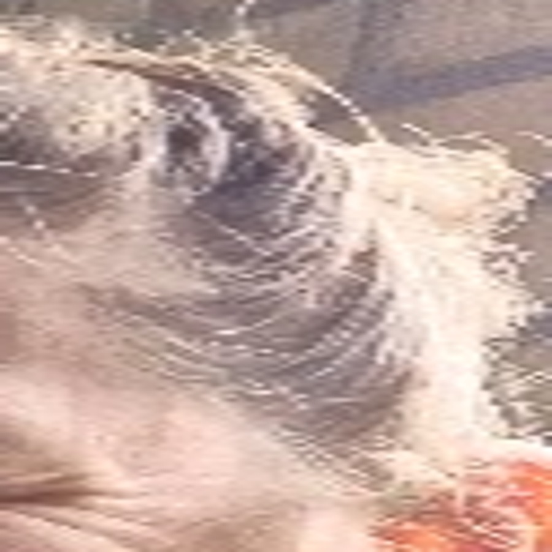

Moldavië • kennismakingsspel
Post 24

Mijn werk speelt zich af tussen de koeien, maar mijn opleiding was werktuigbouw. Paardrijden, tuinieren en creatief bezig zijn doe ik graag.
Wie ben ik?

Mijn werk speelt zich af tussen de koeien, maar mijn opleiding was werktuigbouw. Paardrijden, tuinieren en creatief bezig zijn doe ik graag.